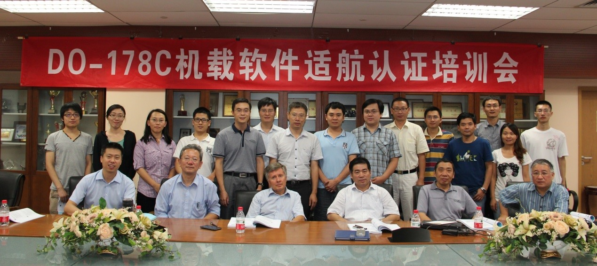
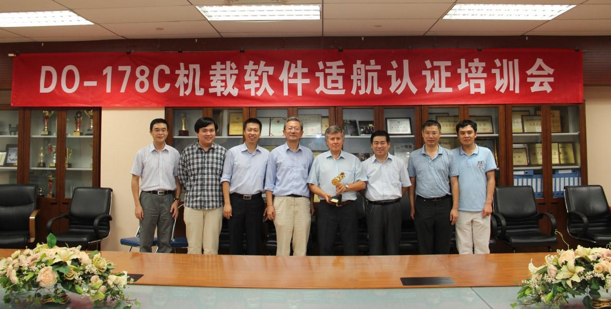

随着计算机技术在航空领域的广泛应用，在过去20多年时间里航空机载电子设备得到了飞速的发展。为了降低开发成本并满足越来越复杂的功能、性能需求，软件在整个电子设备中占的比重越来越大。这在带来巨大积极作用的同时也带来了潜在的风险。为了解决软件比重不断增大而带来的对于系统安全性带来的挑战，如何通过标准和规范的软件开发流程来保证软件的质量成为世界各国普遍关注和急待解决的问题。在民用航空领域，DO-178B/C标准作为全球认可的用于指导机载软件研制流程的指南，民机上使用的机载软件均需要通过DO-178B/C适航认证。DO-178B标准正式发布于1992年，在20多年的时间中，软件研制技术（基于模型的开发与验证、形式化方法、自动代码生成技术）的不断发展以及DO-178B标准在实施过程中累积的一系列政策文件等都迫切要求对于 DO-178B标准进行升级。2011年DO-178C正式发布，FAA在2013年7月19日正式确定机载系统和设备的软件开发和适航审定可以采用DO-178C标准。DO-178C标准在保持DO-178B整体流程架构的同时，增加了DO-330软件工具鉴定考虑、DO-331基于模型的开发和验证、DO332-面向对象开发的考虑、DO-333形式化方法的使用等补充文件。

北京航空航天大学计算机学院近年来在安全关键的机载系统领域进行了广泛深入的研究，并在DO-178C的基于模型的开发验证、形式化方法领域积极探索。为进一步加强计算机学院在航空机载系统研发、机载软硬件适航认证等方面的技术基础，扩大计算机学院在可信航空计算方面的国内影响力，拓展学院与法国、意大利科研机构/公司在机载系统方面的国际合作，2013年9月11日-13日，北航计算机学院“DO-178C航空机载软件适航认证培训会”在新主楼G849会议室成功举行，软件开发环境国家重点实验室马殿富教授邀请到EUROCAE/RTCA下DO-178C/ED12C标准工作组成员、意大利Intecs公司专家Andrea Musone先生担任此次培训的主讲、Intecs公司航空软件专家皮磊博士担任助讲。

参加此次培训会的有来自北京航空航天大学、中航工业第六三一研究所（西安航空计算技术研究所）、中国民航科学技术研究院、北京神舟航天软件技术有限公司、北京科银京成技术有限公司等单位的20多名学员，包括各单位的高层管理者、总师、部门经理、核心技术人员等。